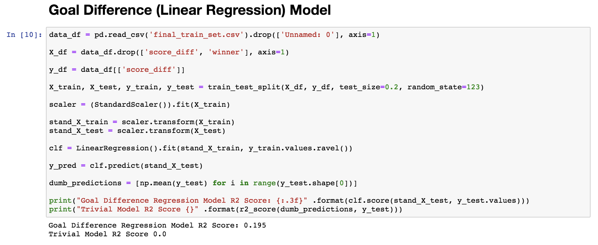
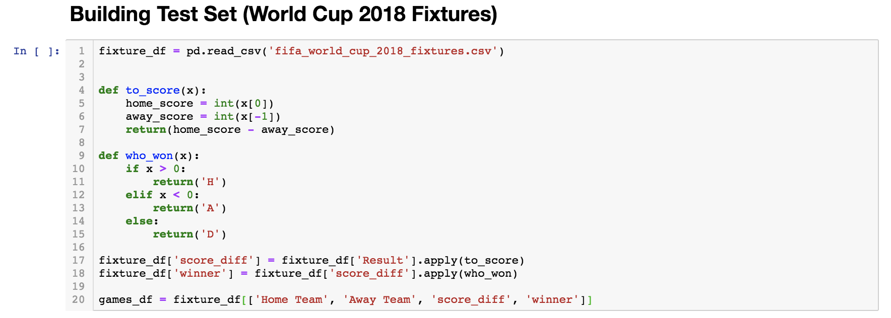
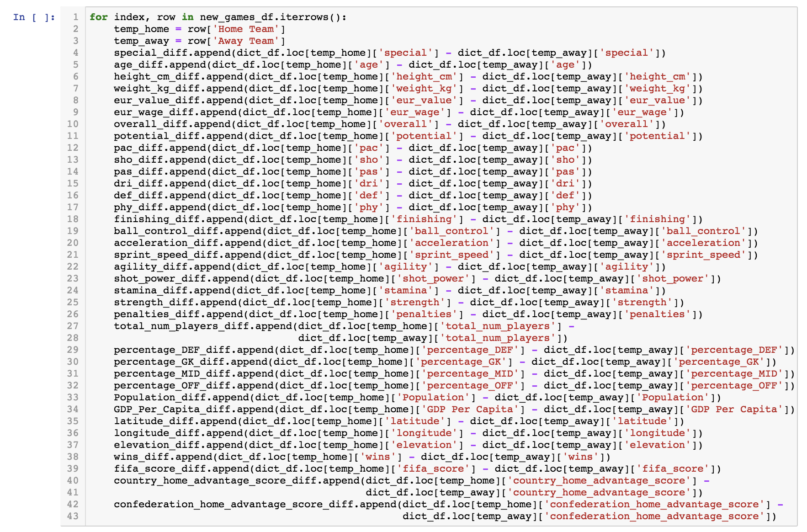
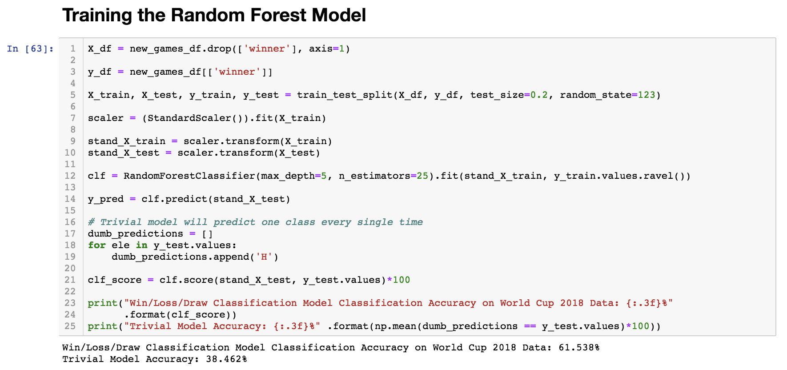

The Development from a Baseline to the Final Models
*We chose to create baseline models for 'Win/Loss/Draw' and 'Goal Differential' because these cover the classification and regression model types we learned in class (respectively).
*The Win/Loss/Draw Classification model did a pretty good job of classifying the home team's win, loss or draw (based on the created testing set). The accuracy was almost 50% while the accuracy of the trivial model would range from 24% to 33%.
*The Goal Differential Regression model did a very poor job, with an R2 accuracy of 0.0473. We will try to improve this model by adding more features and using a better modeling method.
*The features we chose were informed by our EDAs, general knowledge about football, and also through literature review.
But here are some other (compelling) reasons we chose the 33 features:
We found out that age is very important in how effective a player is. A player that is too old can’t keep up with the game, and on the other hand a player who is too young is not experienced enough. Height and weight affect to a player’s ability to have better dribble during the game. A player who is too tall or overweight naturally will be blocked more often. Nationality would indicate the weather conditions a player might be used to. The player’s value indicates of its quality of play. Usually how well and effective a player is. Wage brings motivation for the players. Other than that, just as well as value, a player’s wage shows how well they play. We need the overall player strength to see how strong a team would be. We collected the data for players’ nationality, value, wage, overall player strength from sofifa.com. The number of passes and shot accuracy for each player is an indicator of how many chances would they get for scoring goals. The better a player is at dribble control, the more offensive that player could be. The stronger players of a team are at defense, the team is more defensive and more protective towards keeping their goal safe. This indicates how much ready and strong a player is to perform in the match. This predictor shows the chances of scoring goals by offensive players. Even a great player with low finishing strength won’t be able to score. A player with higher ball control score won’t lose the ball passed to him and therefore will higher the chances of scoring goals. A player with high acceleration and sprint speed could leave the defensive players of the other team behind. This indicates better dribble control and better change of the direction while dribbling. More powerful shots are harder to catch by the keeper. A player with higher stamina can keep up until last minutes of the game. A player with more strength is more effective in team’s total strength. This shows the chance of scoring penalties. We will need this predictor to describe/classify a team as an offensive or defensive one, based on other predictors. This will relate to how much a country can potentially spend on its national team. This will affect wages of players, the training conditions and hiring distinguished coaches for their team. Country’s higher population means more talents and more participation. On the other hand, this could affect GDP. These two predictors would mean a familiar atmosphere and lots of fans for the home team, so players are encouraged to play better. The teams are not used to playing in the same weather conditions, and moreover teams might have had to travel a long distance to get to the home country and that would affect players. Data has shown that European teams that win the World Cup don’t perform well at the next ones. We considered this in our model. FIFA score is a great indicator of all the predictors above and many others. It shows how great a player they are, how likely they are to score goals and many other.
*The code snippet above is meant to create a Poisson Regression to model the distribution between the difference in the home and away scores in each head-to-head game. The Poisson distribution works to calculate this "home advantage score" because of the fact that it will find a probabilistic prediction of a number of events (in this case, goals) happening in a specific time period (in this case, 90 mins) based on how often the events occur, on average. There are a couple key assumptions that this model relies on: first, the number of goals is independent of time (that is, goals aren't scored more often further in the game). Second, the number of goals scored by each team are considered independent events. Following these two assumptions, and a little manipulation, our code will return the number of times more goals the home team is predicted to score than the away team.
*At this point, we have a csv file called 'final_train_set.csv' where all our 33 features are aggregated and put into a form that our models can read, feed in, and train on.
Features Added
*We will now add the 33 features to the basic ones included in our baseline model and train on this expanded dataset in hopes that the accuracy and R2 value will improve.
Features Added
*When comparing the baseline model with our new one with added features, we see a significant improvement! The classification Win/Loss/Draw model went up from 48% to 53% and the regression Goal Difference model went up from 0.0473 to 0.195 (R2 value).
Random Forest
  From our classification baseline model's meager 53 percent accuracy, our final, fine-tuned model achieved an accuracy of 61.5 perent on all of the actual 2018 World Cup fixtures! That means that out of the 64 matches, it predicted the outcomes of about 40 of them correctly! That is a huge improvement, especially considering that we weren't even using FIFA rankings as a predictor, and the 2018 World Cup was so unpredictable. We believe that the reason for this improvement is due to using a Random Forest Classifier, instead of the simple Logistic Regression classifiers that we were using previously.